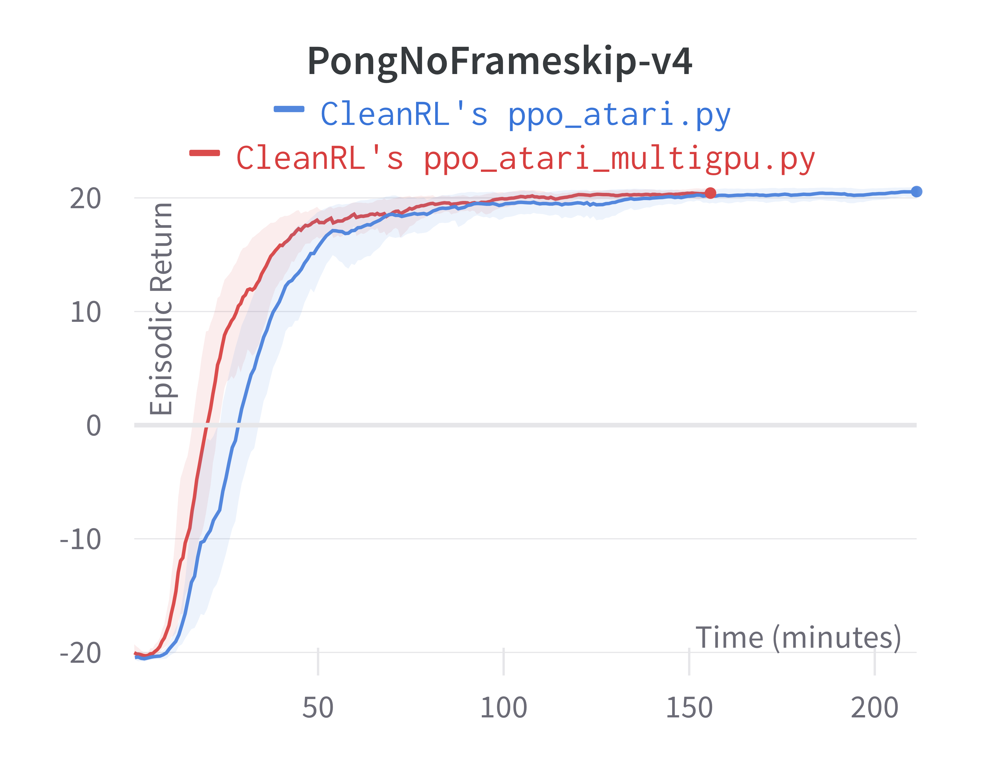
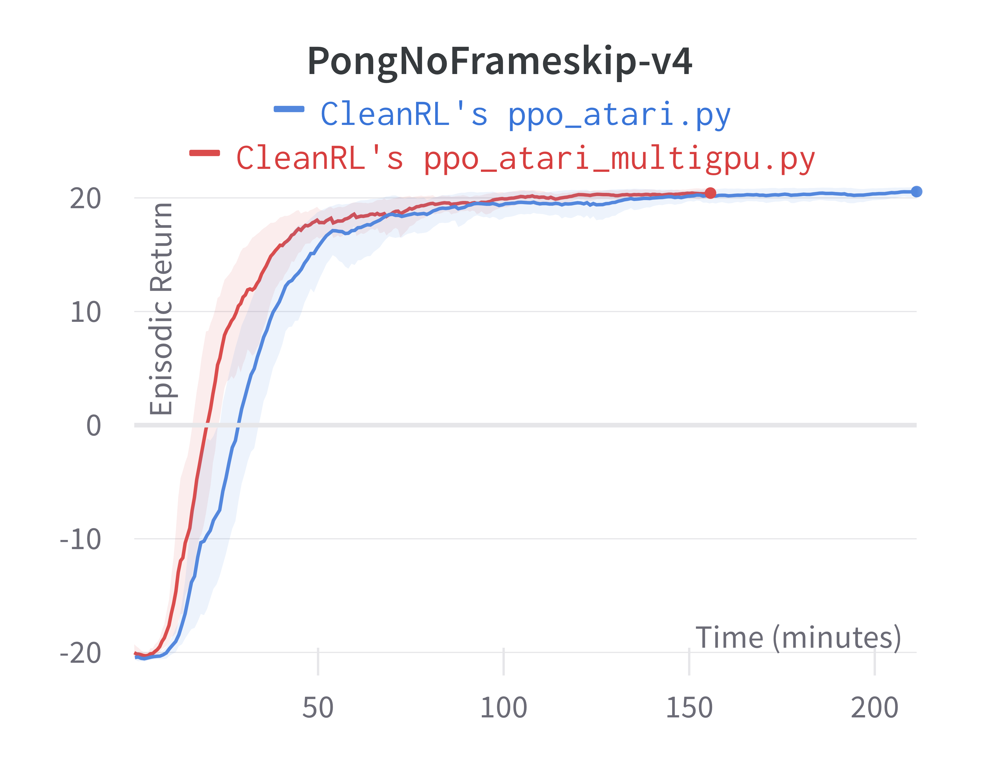

Proximal Policy Gradient (PPO)
Overview
PPO is one of the most popular DRL algorithms. It runs reasonably fast by leveraging vector (parallel) environments and naturally works well with different action spaces, therefore supporting a variety of games. It also has good sample efficiency compared to algorithms such as DQN.
Original paper:
Reference resources:
- Implementation Matters in Deep Policy Gradients: A Case Study on PPO and TRPO
- What Matters In On-Policy Reinforcement Learning? A Large-Scale Empirical Study
- ⭐ The 37 Implementation Details of Proximal Policy Optimization
All our PPO implementations below are augmented with the same code-level optimizations presented in openai/baselines's PPO. To achieve this, see how we matched the implementation details in our blog post The 37 Implementation Details of Proximal Policy Optimization.
Implemented Variants
| Variants Implemented | Description |
|---|---|
ppo.py, docs |
For classic control tasks like CartPole-v1. |
ppo_atari.py, docs |
For Atari games. It uses convolutional layers and common atari-based pre-processing techniques. |
ppo_continuous_action.py, docs |
For continuous action space. Also implemented Mujoco-specific code-level optimizations |
ppo_atari_lstm.py, docs |
For Atari games using LSTM without stacked frames. |
ppo_atari_envpool.py, docs |
Uses the blazing fast Envpool Atari vectorized environment. |
ppo_procgen.py, docs |
For the procgen environments |
ppo_atari_multigpu.py, docs |
For Atari environments leveraging multi-GPUs |
ppo_pettingzoo_ma_atari.py, docs |
For Pettingzoo's multi-agent Atari environments |
Below are our single-file implementations of PPO:
ppo.py
The ppo.py has the following features:
- Works with the
Boxobservation space of low-level features - Works with the
Discreteaction space - Works with envs like
CartPole-v1
Usage
poetry install
python cleanrl/ppo.py --help
python cleanrl/ppo.py --env-id CartPole-v1
Explanation of the logged metrics
Running python cleanrl/ppo.py will automatically record various metrics such as actor or value losses in Tensorboard. Below is the documentation for these metrics:
charts/episodic_return: episodic return of the gamecharts/episodic_length: episodic length of the gamecharts/SPS: number of steps per secondcharts/learning_rate: the current learning ratelosses/value_loss: the mean value loss across all data pointslosses/policy_loss: the mean policy loss across all data pointslosses/entropy: the mean entropy value across all data pointslosses/old_approx_kl: the approximate Kullback–Leibler divergence, measured by(-logratio).mean(), which corresponds to the k1 estimator in John Schulman’s blog post on approximating KLlosses/approx_kl: better alternative toolad_approx_klmeasured by(logratio.exp() - 1) - logratio, which corresponds to the k3 estimator in approximating KLlosses/clipfrac: the fraction of the training data that triggered the clipped objectivelosses/explained_variance: the explained variance for the value function
Implementation details
ppo.py is based on the "13 core implementation details" in The 37 Implementation Details of Proximal Policy Optimization, which are as follows:
- Vectorized architecture ( common/cmd_util.py#L22)
- Orthogonal Initialization of Weights and Constant Initialization of biases ( a2c/utils.py#L58))
- The Adam Optimizer's Epsilon Parameter ( ppo2/model.py#L100)
- Adam Learning Rate Annealing ( ppo2/ppo2.py#L133-L135)
- Generalized Advantage Estimation ( ppo2/runner.py#L56-L65)
- Mini-batch Updates ( ppo2/ppo2.py#L157-L166)
- Normalization of Advantages ( ppo2/model.py#L139)
- Clipped surrogate objective ( ppo2/model.py#L81-L86)
- Value Function Loss Clipping ( ppo2/model.py#L68-L75)
- Overall Loss and Entropy Bonus ( ppo2/model.py#L91)
- Global Gradient Clipping ( ppo2/model.py#L102-L108)
- Debug variables ( ppo2/model.py#L115-L116)
- Separate MLP networks for policy and value functions ( common/policies.py#L156-L160, baselines/common/models.py#L75-L103)
Experiment results
To run benchmark experiments, see benchmark/ppo.sh. Specifically, execute the following command:
Below are the average episodic returns for ppo.py. To ensure the quality of the implementation, we compared the results against openai/baselies' PPO.
| Environment | ppo.py |
openai/baselies' PPO (Huang et al., 2022)1 |
|---|---|---|
| CartPole-v1 | 492.40 ± 13.05 | 497.54 ± 4.02 |
| Acrobot-v1 | -89.93 ± 6.34 | -81.82 ± 5.58 |
| MountainCar-v0 | -200.00 ± 0.00 | -200.00 ± 0.00 |
Learning curves:


Tracked experiments and game play videos:
Video tutorial
If you'd like to learn ppo.py in-depth, consider checking out the following video tutorial:
ppo_atari.py
The ppo_atari.py has the following features:
- For Atari games. It uses convolutional layers and common atari-based pre-processing techniques.
- Works with the Atari's pixel
Boxobservation space of shape(210, 160, 3) - Works with the
Discreteaction space
Usage
poetry install -E atari
python cleanrl/ppo_atari.py --help
python cleanrl/ppo_atari.py --env-id BreakoutNoFrameskip-v4
Explanation of the logged metrics
See related docs for ppo.py.
Implementation details
ppo_atari.py is based on the "9 Atari implementation details" in The 37 Implementation Details of Proximal Policy Optimization, which are as follows:
- The Use of
NoopResetEnv( common/atari_wrappers.py#L12) - The Use of
MaxAndSkipEnv( common/atari_wrappers.py#L97) - The Use of
EpisodicLifeEnv( common/atari_wrappers.py#L61) - The Use of
FireResetEnv( common/atari_wrappers.py#L41) - The Use of
WarpFrame(Image transformation) common/atari_wrappers.py#L134 - The Use of
ClipRewardEnv( common/atari_wrappers.py#L125) - The Use of
FrameStack( common/atari_wrappers.py#L188) - Shared Nature-CNN network for the policy and value functions ( common/policies.py#L157, common/models.py#L15-L26)
- Scaling the Images to Range [0, 1] ( common/models.py#L19)
Experiment results
To run benchmark experiments, see benchmark/ppo.sh. Specifically, execute the following command:
Below are the average episodic returns for ppo_atari.py. To ensure the quality of the implementation, we compared the results against openai/baselies' PPO.
| Environment | ppo_atari.py |
openai/baselies' PPO (Huang et al., 2022)1 |
|---|---|---|
| BreakoutNoFrameskip-v4 | 416.31 ± 43.92 | 406.57 ± 31.554 |
| PongNoFrameskip-v4 | 20.59 ± 0.35 | 20.512 ± 0.50 |
| BeamRiderNoFrameskip-v4 | 2445.38 ± 528.91 | 2642.97 ± 670.37 |
Learning curves:


Tracked experiments and game play videos:
Video tutorial
If you'd like to learn ppo_atari.py in-depth, consider checking out the following video tutorial:
ppo_continuous_action.py
The ppo_continuous_action.py has the following features:
- For continuous action space. Also implemented Mujoco-specific code-level optimizations
- Works with the
Boxobservation space of low-level features - Works with the
Box(continuous) action space
Usage
poetry install -E atari
python cleanrl/ppo_continuous_action.py --help
python cleanrl/ppo_continuous_action.py --env-id Hopper-v2
Explanation of the logged metrics
See related docs for ppo.py.
Implementation details
ppo_continuous_action.py is based on the "9 details for continuous action domains (e.g. Mujoco)" in The 37 Implementation Details of Proximal Policy Optimization, which are as follows:
- Continuous actions via normal distributions ( common/distributions.py#L103-L104)
- State-independent log standard deviation ( common/distributions.py#L104)
- Independent action components ( common/distributions.py#L238-L246)
- Separate MLP networks for policy and value functions ( common/policies.py#L160, baselines/common/models.py#L75-L103
- Handling of action clipping to valid range and storage ( common/cmd_util.py#L99-L100)
- Normalization of Observation ( common/vec_env/vec_normalize.py#L4)
- Observation Clipping ( common/vec_env/vec_normalize.py#L39)
- Reward Scaling ( common/vec_env/vec_normalize.py#L28)
- Reward Clipping ( common/vec_env/vec_normalize.py#L32)
Experiment results
To run benchmark experiments, see benchmark/ppo.sh. Specifically, execute the following command:
Below are the average episodic returns for ppo_continuous_action.py. To ensure the quality of the implementation, we compared the results against openai/baselies' PPO.
| Environment | ppo_continuous_action.py |
openai/baselies' PPO (Huang et al., 2022)1 |
|---|---|---|
| Hopper-v2 | 2231.12 ± 656.72 | 2518.95 ± 850.46 |
| Walker2d-v2 | 3050.09 ± 1136.21 | 3208.08 ± 1264.37 |
| HalfCheetah-v2 | 1822.82 ± 928.11 | 2152.26 ± 1159.84 |
Learning curves:


Tracked experiments and game play videos:
Video tutorial
If you'd like to learn ppo_continuous_action.py in-depth, consider checking out the following video tutorial:
ppo_atari_lstm.py
The ppo_atari_lstm.py has the following features:
- For Atari games using LSTM without stacked frames. It uses convolutional layers and common atari-based pre-processing techniques.
- Works with the Atari's pixel
Boxobservation space of shape(210, 160, 3) - Works with the
Discreteaction space
Usage
poetry install -E atari
python cleanrl/ppo_atari_lstm.py --help
python cleanrl/ppo_atari_lstm.py --env-id BreakoutNoFrameskip-v4
Explanation of the logged metrics
See related docs for ppo.py.
Implementation details
ppo_atari_lstm.py is based on the "5 LSTM implementation details" in The 37 Implementation Details of Proximal Policy Optimization, which are as follows:
- Layer initialization for LSTM layers ( a2c/utils.py#L84-L86)
- Initialize the LSTM states to be zeros ( common/models.py#L179)
- Reset LSTM states at the end of the episode ( common/models.py#L141)
- Prepare sequential rollouts in mini-batches ( a2c/utils.py#L81)
- Reconstruct LSTM states during training ( a2c/utils.py#L81)
To help test out the memory, we remove the 4 stacked frames from the observation (i.e., using env = gym.wrappers.FrameStack(env, 1) instead of env = gym.wrappers.FrameStack(env, 4) like in ppo_atari.py )
Experiment results
To run benchmark experiments, see benchmark/ppo.sh. Specifically, execute the following command:
Below are the average episodic returns for ppo_atari_lstm.py. To ensure the quality of the implementation, we compared the results against openai/baselies' PPO.
| Environment | ppo_atari_lstm.py |
openai/baselies' PPO (Huang et al., 2022)1 |
|---|---|---|
| BreakoutNoFrameskip-v4 | 128.92 ± 31.10 | 138.98 ± 50.76 |
| PongNoFrameskip-v4 | 19.78 ± 1.58 | 19.79 ± 0.67 |
| BeamRiderNoFrameskip-v4 | 1536.20 ± 612.21 | 1591.68 ± 372.95 |
Learning curves:


Tracked experiments and game play videos:
ppo_atari_envpool.py
The ppo_atari_envpool.py has the following features:
- Uses the blazing fast Envpool vectorized environment.
- For Atari games. It uses convolutional layers and common atari-based pre-processing techniques.
- Works with the Atari's pixel
Boxobservation space of shape(210, 160, 3) - Works with the
Discreteaction space
Warning
Note that ppo_atari_envpool.py does not work in Windows and MacOs . See envpool's built wheels here: https://pypi.org/project/envpool/#files
Usage
poetry install -E envpool
python cleanrl/ppo_atari_envpool.py --help
python cleanrl/ppo_atari_envpool.py --env-id Breakout-v5
Explanation of the logged metrics
See related docs for ppo.py.
Implementation details
ppo_atari_envpool.py uses a customized RecordEpisodeStatistics to work with envpool but has the same other implementation details as ppo_atari.py (see related docs).
Experiment results
To run benchmark experiments, see benchmark/ppo.sh. Specifically, execute the following command:
Below are the average episodic returns for ppo_atari_envpool.py. Notice it has the same sample efficiency as ppo_atari.py, but runs about 3x faster.
| Environment | ppo_atari_envpool.py (~80 mins) |
ppo_atari.py (~220 mins) |
|---|---|---|
| BreakoutNoFrameskip-v4 | 389.57 ± 29.62 | 416.31 ± 43.92 |
| PongNoFrameskip-v4 | 20.55 ± 0.37 | 20.59 ± 0.35 |
| BeamRiderNoFrameskip-v4 | 2039.83 ± 1146.62 | 2445.38 ± 528.91 |
Learning curves:


Tracked experiments and game play videos:
ppo_procgen.py
The ppo_procgen.py has the following features:
- For the procgen environments
- Uses IMPALA-style neural network
- Works with the
Discreteaction space
Usage
poetry install -E procgen
python cleanrl/ppo_procgen.py --help
python cleanrl/ppo_procgen.py --env-id starpilot
Explanation of the logged metrics
See related docs for ppo.py.
Implementation details
ppo_procgen.py is based on the details in "Appendix" in The 37 Implementation Details of Proximal Policy Optimization, which are as follows:
- IMPALA-style Neural Network ( common/models.py#L28)
- Use the same
gammaparameter in theNormalizeRewardwrapper. Note that the original implementation from openai/train-procgen uses the defaultgamma=0.99in theVecNormalizewrapper butgamma=0.999as PPO's parameter. The mismatch between thegammas is technically incorrect. See #209
Experiment results
To run benchmark experiments, see benchmark/ppo.sh. Specifically, execute the following command:
We try to match the default setting in openai/train-procgen except that we use the easy distribution mode and total_timesteps=25e6 to save compute. Notice openai/train-procgen has the following settings:
- Learning rate annealing is turned off by default
- Reward scaling and reward clipping is used
Below are the average episodic returns for ppo_procgen.py. To ensure the quality of the implementation, we compared the results against openai/baselies' PPO.
| Environment | ppo_procgen.py |
openai/baselies' PPO (Huang et al., 2022)1 |
|---|---|---|
| StarPilot (easy) | 32.47 ± 11.21 | 33.97 ± 7.86 |
| BossFight (easy) | 9.63 ± 2.35 | 9.35 ± 2.04 |
| BigFish (easy) | 16.80 ± 9.49 | 20.06 ± 5.34 |
Info
Note that we have run the procgen experiments using the easy distribution for reducing the computational cost.
Learning curves:

Tracked experiments and game play videos:
ppo_atari_multigpu.py
The ppo_atari_multigpu.py leverages data parallelism to speed up training time at no cost of sample efficiency.
ppo_atari_multigpu.py has the following features:
- Allows the users to use do training leveraging data parallelism
- For playing Atari games. It uses convolutional layers and common atari-based pre-processing techniques.
- Works with the Atari's pixel
Boxobservation space of shape(210, 160, 3) - Works with the
Discreteaction space
Warning
Note that ppo_atari_multigpu.py does not work in Windows and MacOs . It will error out with NOTE: Redirects are currently not supported in Windows or MacOs. See pytorch/pytorch#20380
Usage
poetry install -E atari
python cleanrl/ppo_atari_multigpu.py --help
# `--nproc_per_node=2` specifies how many subprocesses we spawn for training with data parallelism
# note it is possible to run this with a *single GPU*: each process will simply share the same GPU
torchrun --standalone --nnodes=1 --nproc_per_node=2 cleanrl/ppo_atari_multigpu.py --env-id BreakoutNoFrameskip-v4
# by default we use the `gloo` backend, but you can use the `nccl` backend for better multi-GPU performance
torchrun --standalone --nnodes=1 --nproc_per_node=2 cleanrl/ppo_atari_multigpu.py --env-id BreakoutNoFrameskip-v4 --backend nccl
# it is possible to spawn more processes than the amount of GPUs you have via `--device-ids`
# e.g., the command below spawns two processes using GPU 0 and two processes using GPU 1
torchrun --standalone --nnodes=1 --nproc_per_node=2 cleanrl/ppo_atari_multigpu.py --env-id BreakoutNoFrameskip-v4 --device-ids 0 0 1 1
Explanation of the logged metrics
See related docs for ppo.py.
Implementation details
ppo_atari_multigpu.py is based on ppo_atari.py (see its related docs).
We use Pytorch's distributed API to implement the data parallelism paradigm. The basic idea is that the user can spawn \(N\) processes each holding a copy of the model, step the environments, and averages their gradients together for the backward pass. Here are a few note-worthy implementation details.
- Shard the environments: by default,
ppo_atari_multigpu.pyuses--num-envs=8. When callingtorchrun --standalone --nnodes=1 --nproc_per_node=2 cleanrl/ppo_atari_multigpu.py --env-id BreakoutNoFrameskip-v4, it spawns \(N=2\) (by--nproc_per_node=2) subprocesses and shard the environments across these 2 subprocesses. In particular, each subprocess will have8/2=4environments. Implementation wise, we doargs.num_envs = int(args.num_envs / world_size). Hereworld_size=2refers to the size of the world, which means the group of subprocesses. We also need to adjust various variables as follows:- batch size: by default it is
(num_envs * num_steps) = 8 * 128 = 1024and we adjust it to(num_envs / world_size * num_steps) = (4 * 128) = 512. - minibatch size: by default it is
(num_envs * num_steps) / num_minibatches = (8 * 128) / 4 = 256and we adjust it to(num_envs / world_size * num_steps) / num_minibatches = (4 * 128) / 4 = 128. - number of updates: by default it is
total_timesteps // batch_size = 10000000 // (8 * 128) = 9765and we adjust it tototal_timesteps // (batch_size * world_size) = 10000000 // (8 * 128 * 2) = 4882. - global step increment: by default it is
num_envsand we adjust it tonum_envs * world_size.
- batch size: by default it is
-
Adjust seed per process: we need be very careful with seeding: we could have used the exact same seed for each subprocess. To ensure this does not happen, we do the following
# CRUCIAL: note that we needed to pass a different seed for each data parallelism worker args.seed += local_rank random.seed(args.seed) np.random.seed(args.seed) torch.manual_seed(args.seed - local_rank) torch.backends.cudnn.deterministic = args.torch_deterministic # ... envs = gym.vector.SyncVectorEnv( [make_env(args.env_id, args.seed + i, i, args.capture_video, run_name) for i in range(args.num_envs)] ) assert isinstance(envs.single_action_space, gym.spaces.Discrete), "only discrete action space is supported" agent = Agent(envs).to(device) torch.manual_seed(args.seed) optimizer = optim.Adam(agent.parameters(), lr=args.learning_rate, eps=1e-5)Notice that we adjust the seed with
args.seed += local_rank(line 2), wherelocal_rankis the index of the subprocesses. This ensures we seed packages and envs with uncorrealted seeds. However, we do need to use the sametorchseed for all process to initialize same weights for theagent(line 5), after which we can use a different seed fortorch(line 16). 1. Efficient gradient averaging: PyTorch recommends to average the gradient across the whole world via the following (see docs)for param in agent.parameters(): dist.all_reduce(param.grad.data, op=dist.ReduceOp.SUM) param.grad.data /= world_sizeHowever, @cswinter introduces a more efficient gradient averaging scheme with proper batching (see entity-neural-network/incubator#220), which looks like:
all_grads_list = [] for param in agent.parameters(): if param.grad is not None: all_grads_list.append(param.grad.view(-1)) all_grads = torch.cat(all_grads_list) dist.all_reduce(all_grads, op=dist.ReduceOp.SUM) offset = 0 for param in agent.parameters(): if param.grad is not None: param.grad.data.copy_( all_grads[offset : offset + param.numel()].view_as(param.grad.data) / world_size ) offset += param.numel()In our previous empirical testing (see vwxyzjn/cleanrl#162), we have found @cswinter's implementation to be faster, hence we adopt it in our implementation.
We can see how ppo_atari_multigpu.py can result in no loss of sample efficiency. In this example, the ppo_atari.py's minibatch size is 256 and the ppo_atari_multigpu.py's minibatch size is 128 with world size 2. Because we average gradient across the world, the gradient under ppo_atari_multigpu.py should be virtually the same as the gradient under ppo_atari.py.
Experiment results
To run benchmark experiments, see benchmark/ppo.sh. Specifically, execute the following command:
Below are the average episodic returns for ppo_atari_multigpu.py. To ensure no loss of sample efficiency, we compared the results against ppo_atari.py.
| Environment | ppo_atari_multigpu.py (in ~160 mins) |
ppo_atari.py (in ~215 mins) |
|---|---|---|
| BreakoutNoFrameskip-v4 | 429.06 ± 52.09 | 416.31 ± 43.92 |
| PongNoFrameskip-v4 | 20.40 ± 0.46 | 20.59 ± 0.35 |
| BeamRiderNoFrameskip-v4 | 2454.54 ± 740.49 | 2445.38 ± 528.91 |
Learning curves:


 



Under the same hardware, we see that ppo_atari_multigpu.py is about 30% faster than ppo_atari.py with no loss of sample efficiency.
Info
Although ppo_atari_multigpu.py is 30% faster than ppo_atari.py, ppo_atari_multigpu.py is still slower than ppo_atari_envpool.py, as shown below. This comparison really highlights the different kinds of optimization possible.


The purpose of ppo_atari_multigpu.py is not (yet) to achieve the fastest PPO + Atari example. Rather, its purpose is to rigorously validate data paralleism does provide performance benefits. We could do something like ppo_atari_multigpu_envpool.py to possibly obtain the fastest PPO + Atari possible, but that is for another day. Note we may need numba to pin the threads envpool is using in each subprocess to avoid threads fighting each other and lowering the throughput.
Tracked experiments and game play videos:
ppo_pettingzoo_ma_atari.py
ppo_pettingzoo_ma_atari.py trains an agent to learn playing Atari games via selfplay. The selfplay environment is implemented as a vectorized environment from PettingZoo.ml. The basic idea is to create vectorized environment \(E\) with num_envs = N, where \(N\) is the number of players in the game. Say \(N = 2\), then the 0-th sub environment of \(E\) will return the observation for player 0 and 1-th sub environment will return the observation of player 1. Then the two environments takes a batch of 2 actions and execute them for player 0 and player 1, respectively. See "Vectorized architecture" in The 37 Implementation Details of Proximal Policy Optimization for more detail.
ppo_pettingzoo_ma_atari.py has the following features:
- For playing the pettingzoo's multi-agent Atari game.
- Works with the pixel-based observation space
- Works with the
Boxaction space
Warning
Note that ppo_pettingzoo_ma_atari.py does not work in Windows . See https://pypi.org/project/multi-agent-ale-py/#files
Usage
poetry install -E "pettingzoo atari"
poetry run AutoROM --accept-license
python cleanrl/ppo_pettingzoo_ma_atari.py --help
python cleanrl/ppo_pettingzoo_ma_atari.py --env-id pong_v3
python cleanrl/ppo_pettingzoo_ma_atari.py --env-id surround_v2
See https://www.pettingzoo.ml/atari for a full-list of supported environments such as basketball_pong_v3. Notice pettingzoo sometimes introduces breaking changes, so make sure to install the pinned dependencies via poetry.
Explanation of the logged metrics
Additionally, it logs the following metrics
charts/episodic_return-player0: episodic return of the game for player 0charts/episodic_return-player1: episodic return of the game for player 1charts/episodic_length-player0: episodic length of the game for player 0charts/episodic_length-player1: episodic length of the game for player 1
See other logged metrics in the related docs for ppo.py.
Implementation details
ppo_pettingzoo_ma_atari.py is based on ppo_atari.py (see its related docs).
ppo_pettingzoo_ma_atari.py additionally has the following implementation details:
-
supersuitwrappers: uses preprocessing wrappers fromsupersuitinstead of fromstable_baselines3, which looks like the following. In particular note that thesupersuitdoes not offer a wrapper similar toNoopResetEnv, and that it uses theagent_indicator_v0to add two channels indicating the which player the agent controls.1. A more detailed note on the-env = gym.make(env_id) -env = NoopResetEnv(env, noop_max=30) -env = MaxAndSkipEnv(env, skip=4) -env = EpisodicLifeEnv(env) -if "FIRE" in env.unwrapped.get_action_meanings(): - env = FireResetEnv(env) -env = ClipRewardEnv(env) -env = gym.wrappers.ResizeObservation(env, (84, 84)) -env = gym.wrappers.GrayScaleObservation(env) -env = gym.wrappers.FrameStack(env, 4) +env = importlib.import_module(f"pettingzoo.atari.{args.env_id}").parallel_env() +env = ss.max_observation_v0(env, 2) +env = ss.frame_skip_v0(env, 4) +env = ss.clip_reward_v0(env, lower_bound=-1, upper_bound=1) +env = ss.color_reduction_v0(env, mode="B") +env = ss.resize_v1(env, x_size=84, y_size=84) +env = ss.frame_stack_v1(env, 4) +env = ss.agent_indicator_v0(env, type_only=False) +env = ss.pettingzoo_env_to_vec_env_v1(env) +envs = ss.concat_vec_envs_v1(env, args.num_envs // 2, num_cpus=0, base_class="gym")agent_indicator_v0wrapper: let's dig deeper into howagent_indicator_v0works. We doprint(envs.reset(), envs.reset().shape)[ 0., 0., 0., 236., 1, 0.]], [[ 0., 0., 0., 236., 0., 1.], [ 0., 0., 0., 236., 0., 1.], [ 0., 0., 0., 236., 0., 1.], ..., [ 0., 0., 0., 236., 0., 1.], [ 0., 0., 0., 236., 0., 1.], [ 0., 0., 0., 236., 0., 1.]]]]) torch.Size([16, 84, 84, 6])So the
agent_indicator_v0adds the last two columns, where[ 0., 0., 0., 236., 1, 0.]]means this observation is for player 0, and[ 0., 0., 0., 236., 0., 1.]is for player 1. Notice the observation still has the range of \([0, 255]\) but the agent indicator channel has the range of \([0,1]\), so we need to be careful when dividing the observation by 255. In particular, we would only divide the first four channels by 255 and leave the agent indicator channels untouched as follows:def get_action_and_value(self, x, action=None): x = x.clone() x[:, :, :, [0, 1, 2, 3]] /= 255.0 hidden = self.network(x.permute((0, 3, 1, 2)))
Experiment results
To run benchmark experiments, see benchmark/ppo.sh. Specifically, execute the following command:
Info
Note that evaluation is usually tricker in in selfplay environments. The usual episodic return is not a good indicator of the agent's performance in zero-sum games because the episodic return converges to zero. To evaluate the agent's ability, an intuitive approach is to take a look at the videos of the agents playing the game (included below), visually inspect the agent's behavior. The best scheme, however, is rating systems like Trueskill or ELO scores. However, they are more difficult to implement and are outside the scode of ppo_pettingzoo_ma_atari.py.
For simplicity, we measure the episodic length instead, which in a sense measures how many "back and forth" the agent can create. In other words, the longer the agent can play the game, the better the agent can play. Empirically, we have found episodic length to be a good indicator of the agent's skill, especially in pong_v3 and surround_v2. However, it is not the case for tennis_v3 and we'd need to visually inspect the agents' game play videos.
Below are the average episodic length for ppo_pettingzoo_ma_atari.py. To ensure no loss of sample efficiency, we compared the results against ppo_atari.py.
| Environment | ppo_pettingzoo_ma_atari.py |
|---|---|
| pong_v3 | 4153.60 ± 190.80 |
| surround_v2 | 3055.33 ± 223.68 |
| tennis_v3 | 14538.02 ± 7005.54 |
Learning curves:


Tracked experiments and game play videos: